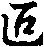
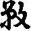

成唯識論疏抄卷第八
疏今說有異是說之者。然有三師不同。所以長行中說。三師義異。頗設異計者。頗者設也。設有師。然次下明受中三師者。皆是護法。假作異計。心同初能變故。所以不說者。此文即是正義。以第七識。同第八識是捨受。所以第二能變中更不說。於無想中出捨根者。意說。無想定心心所皆滅。所以捨受。且無而滅捨根。
疏云此第七識即與被地能引果業之增上受類相應緣彼業果為境界者。此師說。且如解云。有人造三惡趣業時。其惡業即與憂受俱起。其惡業既與憂受俱起。其惡業。後時感第八識。生三惡趣時。其第七識緣。與憂受惡業所感得第八識時。其第七識。且與憂相應。乃至如有人造五戒十善業。其五戒十善業。即與善受俱起。其十善五戒業。後感得第八識。生人六欲天。其第七識。緣第八識時。即與喜受相應。又如有人生得初二本定。其不動業。則有喜受相應。此喜受俱時不動業。則感得第八識。生初二靜慮。即第八識是順喜受業。其第七識。緣順喜受不動業所感第八識時。其第七識。且喜受相應。其第三第四靜慮。且然為然行樂與善受樂受捨受所引。且名順樂受業果。順捨受業果。然此師解。上二界極好。由坐得初二禪定不動業與喜受俱。若得三靜慮定。其不動業。即與樂受俱。若得第四靜慮定。其不動即與捨受俱。後時此不動業。感第八識。生四靜慮中。第七識緣彼第八識時。其第七識。可與喜樂捨俱起。若欲界中。有人造業。惡業與相應。與憂受相應業。後感第八識。第八識即是順應受業果。第七識緣互憂受相應。其理可然。或有人造惡業時。即與喜樂受相應。既感惡業。與喜樂受俱。豈第八識生惡趣。其第七識。緣彼第八識時。其第七識。與喜樂相應。或有人造惡業時。戒即善業。與樂應受俱。此善業則與應樂受俱。既然感善業與應受。豈第七識。於人天中。順善業與應受相應。大論云。若貪現在樂。即造非熟業。造惡業有樂受等。若貪未來樂。即造福業。若貪未來靜慮樂。即造不動業。文云。若與資具即與現在樂。若令出家即與未來樂。若令坐禪定等。即與現在未來樂。
疏云又定地前有增上樂受乃至唯在五識者。此中第二解。其第七識隨他受。謂生第四靜慮。第七識則捨受相應。地法有捨受。若生第三靜慮。第三靜慮中。有其地樂。第七識則樂受相應。第三靜慮地法。是樂受故。故第七識樂受樂相應。若三惡趣中。多有憂共俱憂苦。即在五識中有其憂。即第六識。亦與憂俱。不與苦俱。設造惡趣業時。雖有喜樂俱。由所感第八識受果。果處有憂受。其第七識。唯憂受俱。若人欲天中。多分有喜樂俱。樂受即在五識中。喜受與第六識俱。第七識且與喜樂俱。樂受即在五俱。設造福業行時。有憂苦受。由所感生第八識。他有喜。第七識且與喜俱。又靜慮已上。捨受業勝。四勝慮已上。言第七識與捨受俱。若在人欲天中。雖有捨受。而捨受業劣。即喜樂受勝。所以不說。有第七識。與捨受俱。若三惡趣中。雖亦有捨受。捨受業劣而憂苦受勝。所以亦不說與捨受。此釋勝前疏中釋。
疏云如苦樂受唯在五識非引業俱乃至義不說者。此師說。若第六識。則能造引業滿業。二種為施。若前五識。唯造滿業。不能造引業。又與相應憂受有引業增上。五識中在。即不能但說憂受。初二靜慮。根本意地。唯有喜種。若說為有樂受者。皆義說耶。若輕安即名調物。若言有則言遍悅[适-古+畜]逈。初二定樂悅五義別悅。亦不說之。唯不知意說。初二靜慮中雖有樂。即於喜受。能悅五根義說為樂。此論文不說初二靜慮中有樂。但說有喜。問五識依五根。必依自上地。何故第六識。依第七識。即許上地第六識。而依下地第七識。即如身在下地。起上地潤生受等。俱生捨受第八識俱。乃至證此義者。彼論亦說。俱生捨受。與第七識俱。然應等皆思惟引發者。若起喜樂。應皆攝心中思惟之所引發。如思惟前惡等身起。應彼論云。若應喜樂等。當知思惟所引發。若捨受。當知任運之所引發。地如依緣等者。若第七識。依他頌中言。依彼轉緣彼故。頌中別說。若第八識。不依他故。但與他為依。即如頌言依根本識等也。問異熟一切種等。既有不同。何故此識而不別說者。此中問意。前第八識。既言異熟。其明第七識頌。且應受非異熟。前時第八識頌中既言一切種。其第八識頌中應云非一切種。何故明第七識頌中不別說。答彼是第八識自相不別義。然此明第七識自相。謂思量為性相。問此疏中云。明異熟即是第八識故果。一切種即是第八識因。有如何乃至是第八識自相別義。答第八識。持因果為自性故異熟一切種是第八別義。又言染汙即異彼者。又明第七識頌中言。有覆無記攝。即顯第七識是染汙。顯與彼八識別也。前言異熟即是無記。觸等五同何。今說者。此中問既觸等五法。與第八識相應。何故第七識頌中云及觸等俱。何不須說。謂加愛等者。此中答意。有何所以不須說耶。謂與第七識相應心所。與前第八識多少異。其第七識。又加我癡我等煩惱。所以頌中重云觸等者。第二能變頌中。不說遍行五數。謂唯有四惑相應。更無餘心所法故。故今說觸等。辨四或成九法也。將恒轉如流。何故不說者。此問意。若第八識常相續。至究竟位方捨。可許頌中言恒轉如流。第七識因中十地起平等智。既數轉易。如何頌中不說有非恒轉如流。以顯別於第八識。
疏云此三位捨。即顯非恒如流轉者。第八識至果位究竟道方轉。頌中有恒轉之言。第七識在於因中滅定出世道。數有轉易。頌中不說恒轉言。以頌說三位。數。第七非恒亦以說。
疏云又此若與四受相應乃至少分斷者。難前師言。若第七識。與四受相應者。如且第三果。雜欲界染。生初靜慮時。應名斷第七識心。初靜慮生。應二靜慮出在三出樂等。皆少分斷。第七識即於修道中。以斷第七識少分。如何言全則頓。即是漸斷已失。
疏云問若爾欲界中乃至方欲斷者。此中意。且如欲界中不伏修惑者。如世間道。唯然伏修道俱生中貪瞋癡等迷事麤煩惱。不能伏修道中身邊二見迷理細煩惱。及與身邊二見。俱起隣迄貪癡迷理者。且不能伏之。此修道俱生身邊二見。九品中第九見方能斷。第七識九品之中。且第九品斷。與第六識中邊二見有何差引。答曰彼身邊二見。則地地中第九品斷。我第七識唯有頂地。與下下煩惱同時頓斷。與前別。雖世道不能伏身邊二見。身邊二見被伏故。且不能起。
疏云唯初地已去有行不行乃至亦名無動搖者。入初地已去。第六識入法空根本智。及法空後得智。及法空滅盡定。其第七識平等性智即行。若入(生定)空觀根本智。及生空觀後得智。及滅盡定。其第七識有漏心位平等智。即不行。若成佛已去。第七識。一切時常起平等智。平等智與圓鏡智。相續相依。盡未來際。即平等智常行。又常捨受名無動搖故。又彼此智。多起我於即大悲等者。能佛果位第七識平等智。常起大悲。而現他受用身故。化十地菩薩。何以得知。現他受用身。即是大悲攝。答約三德已言之。若法身即是斷德。若自受用身即是智德。若他受用變化身皆名恩德。他受用及變化身。皆起大悲也。
疏云在第四靜慮唯捨受者。此平等。即住第四靜慮。此智亦通色界六地無色界四地。雖有多不起。唯起第四靜慮。盡住中。多住大悲也。
疏云又設下地有平等智不變易者。設初靜慮。二三起平等智。亦唯捨受。與因位相順。同捨受故。疏云不可定說下地第七為有頂依者。若第七識。在有漏位。或在法執位。雖在下地。亦與上地第六識生空妙觀察智為依。若十地位中。第七識無漏位。成平等性智。隨在何地。初靜慮二地乃至有頂第六識。入法空妙觀察智。且引第七識。必同地。不可無漏第七識在下地。與上地第六識法空妙觀察智為依。必同地。若在佛位則不然。第七識常在第四靜慮地。設第六識。依有頂地。以入滅盡定。且下地第七。與上地第六識為依。如有難。云何果位平等智。唯依第四禪。因位平等智。則返餘地起。答生死之位。下地第七識為根。發上地妙觀察智。因果既是解。何妨二位別。又問五識依五根。必自上地。如初禪眼識。或依自地根。或依上三禪眼。必無上地眼識依下地五根。何故第六依第七。則依上下根。如在欲界。念修起無色愛所依根。第七識即是下地能依。第六即是上。或上地欲貪。終起欲界愛。能依第六識即欲界繫。所依第七識即是上地繫。
疏云言隱沒為不善言故。解云。集經論言隱沒無記不隱沒無記。是不名方言令親云有覆無記無覆無記。
疏云攝論二本皆第一說者。然無性攝論第一。天親亦第一中。皆明第七識是微細。即有覆無記性。一云前問及煩惱問答心乃至名有覆者。此中說前問者。即次前論文中。云末那心所何性攝耶。末那者。是問第七。心王何性攝耶者。心所者。即問與第七識相應心所何性攝耶。即論中雙問心王心所是何攝。前頌即是時。第二能變頌中者。有覆無記攝。有頌中亦雙明心王心所行。是有覆攝。今此已下論文答解中。唯說心所是有覆攝。不說心王是有覆攝。即論答解云。此意相應。四煩惱等。乃至隱蔽自心說名有覆。答中意顯第七心王體性非染。即舉同時相應四煩惱等。以顯心王。心王由他心所等相應染。即由心所覆心王。名為有覆。二云或由解中。唯解心所。乃至以顯心王亦有覆攝者。此第二解云。唯論文解中。唯解心所是有覆。謂此意相應四煩惱等。乃至名有覆。即唯前論文問中。且准問心所。不問心王是何性耶。雖言末那心所所性。攝耶。即舉心王以顯所。又前頌中云。有覆無記攝。亦唯明心所是有覆性。亦不明心王是有覆性。以為與第七識俱時我癡。說為恒行共無明。恐此第七識中不共無明。是不善性。說第七識中不共無明是有覆性。約界為論無地分別者。然彼論云。謂生欲界現末那相應心所。即欲界繫。色無色界亦爾。
疏云對法第一他界緣界緣云者。煩惱緣他界緣云亦不緣色。色等亦通者。即如身在下地。起上地天眼耳根。及扶根塵。謂色觸等文。如馬勝變色界器也。又如色無色天佛邊側立。此等皆是色通異地。
疏云若爾命終心第六識起愛。此愛為緣命終慮自地法為我。為緣當生慮他他法為我耶。
疏云緣未來生即是緣自地所生慮此別緣我唯自地者。如自地死。還生自地者。欲終時。第六識愛。還起自地愛。緣自地法為我。若自地死。生他地者。即起當生地愛。緣當生地法為我。此別緣我法自地。必不緣他法為我耶。
疏云若想緣我許亦緣他者。若總計我。即身中種子過三界。則許緣三界法為我。為簡種故。論說言異熟藏識。言能種子通三界。現行藏識即自地。不可難以相應所緣二轉者。今者第七與第八識俱。相從名繫者。即與第七識。同時四或等。能轉第七識。第七識是所繫。同時煩惱是能繫。即心王屬心所。若緣縛名繫者。第七識中煩惱。能縛第八識。第八識是所縛。第七識煩惱是能縛。即第八識。却屬七識中煩惱。又第六識中煩惱。亦能縛第七識。即第七識屬化第六識中煩惱故。今者。俱約第七識。屬第八者俱。故假名繫。又解此文二釋。一云謂生欲界乃如王屬臣屬相應縛者。此三解中。若第一解。即恒第八識心生地。其與第七相應四惑等心所法。而第七識心王。即心所屬心王。若第二解中。即約第八識。生欲地等。其第七識心王心所。能緣他第八識。即第七心王心所是能緣。其第八識是所緣境。第七識能緣心心所。屬他所緣之地。能緣心心所。亦屬第八識所緣之境。第七心王心所如牛。第八識如若三解。約第八識所生之地。第七識心王。即屬他第八識所生地中諸煩惱等。即第七心王屬餘煩惱。其第七心王。即屬同時四煩惱相。由同時四煩惱等縛第七識心王。第七心王屬同時心所煩惱。即屬相應縛。其第七識心王。亦屬第六識中煩惱。由第六識中煩惱。亦能緣第七識心王。第六識煩惱。能縛他第七識心王。第七識心王屬他第六識中煩惱。即第七心王屬所緣縛。說第七識屬第八識所生地法煩惱。
疏云前所繫言亦通諸執是彼頌者。前我執亦是隨所生繫。若是諸執。亦是隨所生所繫。是彼我執之類。若是平等智。即非所繫。是彼無漏類故也。
疏云彼說滅定二位中起亦攝盡者。一解云。彼論不說滅定者。此滅定通在有學無學二位中智亦攝盡。所以不說。若唯法體相攝。其學無學。即不攝得滅定。滅定即是非學非無學所攝。若約位即亦攝得。即在學無學二位中起故。
疏云彼說世道伏與不伏乃至不舉滅定者。第二解云。彼大論云。世間道伏何煩惱。不伏何煩惱。因言即明出世道。有學無學伏斷煩惱之位次故。且不疑明斷。若伏第七識煩惱事。即不明滅盡八定。滅定非道攝故。
疏云又彼唯約人故說二位此依人及法說有三性立。第三解云。滅定出世道。俱是法収。若學無學。即是人攝。彼論唯自約人說。此論即約人法說。說羅漢即是人出世道。及滅定即是法。如第八識斷捨門中引對法。乃至亦通法執。約自體說者。前明第八識捨門。即引心對法。十地菩薩一切位中如羅漢。然第八識唯從煩惱乃至通法執約自體說者。意說第八識。名阿賴耶者。即約能緣煩惱縛縛說。若斷却能緣煩惱。即捨賴耶之名。即捨名而不捨體。若第七識名染汙者。即約第七識自體名染汙。第七識體。即有王障名染汙定。且不約第七識。約縛名染汙。後時即捨第七識自體。此中不退菩薩乃至繫捨門攝非欲永捨者。問十地菩薩。於三位中。何位攝。答出世道攝。又問此云不退。即是八地已上菩薩。為是初地菩薩。答通二。又問初地已上菩薩。能斷第七識中法執。以不為法執鄣菩薩。若言斷者。何故此云與有頂地上上一時頓斷。問人執染二乘乃至菩薩應不捨者。此中問意。人執能染汙三乘人。三乘人若未斷却人執時。即不名捨藏識賴耶名。二乘斷却人執時。二乘方捨藏識賴耶名。其法執既能染菩薩。八地已去菩薩有法時。八地已上菩薩。應不捨藏識賴耶名。答煩惱障麁乃至不從得名者。第一解云。若煩惱障麁。有煩惱障時。可名藏識。法執即細。八地已上菩薩。賴有法執。不名藏識。又煩惱染三乘乃至不名藏識者。此第二解云。然煩惱障。能染三乘。若斷煩惱時。即捨藏名。法執唯染菩薩。菩薩有法執時。不名藏識。設有執能執。亦不名藏識。問染通三乘乃至應設優劣者。煩惱能染三乘。三乘共立藏名。法執獨染菩薩。菩薩獨得藏名。更應設優劣。更求異釋。答藏據縛唯在煩惱乃至且通法執者。若煩惱是縛。可得立於藏名。染體據障。亦通法執。法執不立藏名也。
疏云三乘學位滅定者。若聲聞人。不還果亦得滅定。若部行中。亦有不還果。而得滅定。然麟喻獨覺。必無學位中而得滅定。謂彼從凡至無學位。一座不出觀。即得無學位。中間更無容預而入滅定。若菩薩人。或說初地得滅定。或說八地得滅定。如下當說。
疏云此諸煩惱皆是本識種子所引者。即約第七識中煩惱。皆從第八識中種子而生。即約因緣依。以離欲由行故者。若世間道。雖伏第六識煩惱。雖已離欲界染。第七染由行故。
疏云非所以對治及能對治境果緣力差別縛者。若世間道亦不然。對治第七識中煩惱。非是世間所對治。故云非所對治。又第七識中煩惱。不作對治道。能對治除煩惱。故云及能對治故。彼世道雖緣六行伏或。境界差別故。八十八云。俱生薩迦耶見。世道不伏。彼初六識中。語識者。此即念問前故。此處即言第七識極微細。與有頂地下下煩惱。一時煩惱斷。彼論即言。俱生薩迦耶見。世道不伏。答此論即約第七識中我見說。彼論即約第六識中俱生身邊二見。皆世道不能伏。
疏云然不言金剛心方斷者。彼論雖言薩迦耶見。然不言金剛心。故知通餘地。餘地之中。第九品斷。故知彼論即約第六識中我見說。若第七識。則是金剛心斷故。此不同彼斷。能不伏相似者。第六識中俱生我見。則九地地皆通斷善。第七識中我見。至金剛心。一時頓斷。若第六識中我見。且世間道不能伏。若第七識中我執。亦世間道不能伏。故云然不相似耶。又第六識中我見。即聖道能斷。若第七識中我見。雖有聖道。亦不能斷。即不還果雖離欲依。不能斷第七識中我見。
疏云一分或全且不現行者。若人生空觀。則一分人執不行。若第六識。人法空觀。則第七識中。人執法執全不現行。
疏云若二乘菩薩人有漏後得智者。然菩薩二乘等。雖由前無漏智。引生有漏智。生有漏智雖由無漏引生依。不得名為後得智。然此有漏智。但名世俱所攝。若無漏者。可名後得智。二乘人且有無漏後得智。謂觀十六心皆是無漏後得智。又二乘雖有根本智。名為羊鹿。而無牛車體。無無漏後得一切種智。唯佛有一切智。故知駕車法牛先車後。根本智根本智如牛。車光後得智如車。真無我解乃至名出世道者。問何故名真無我解。又問何故第十論中。說論後得智名世出世道。此論文中說。後得智唯名出世道。且總相說。由如涅槃者。涅槃即是無心。今此滅定。亦無心也。
疏云以各自地極微細者。第七識於色界自地煩惱九品之中。唯在第九品。乃至有頂皆然。
疏云欲界繫生彼相似不能發業通生等者。欲界第七識。或與有頂地第七識。或皆相似。俱不能發潤生等。若無明能發業。若愛取能潤生。此第七識。不潤無明能發業。亦不潤愛取能潤生。故知四種愛皆不是第七識。彼四種愛皆能潤生故。若有難言既有九品乃至無九品義者。此問意即雙問。難曰。若言第七識有九品。即應地地中九品別斷。以除此第七識中有我見九品故。若許地地中九品別斷者。其第七識。即在欲界中。應有麤細。九品非一。釋上二界亦爾。又難曰。若許若七識常釋故。准下下通頓斷者。應三界中准有一品。第七識應無九品第七識。
疏云由此一類勝道方然斷彼多品之或。即第七識中。或九地為九品。故云多品之或。由此應知實有九品。如斷善邪見唯九品斷依作九品能斷善根者。如斷善根。即下下品邪見。能斷上上品善根。末後即起上上邪見。斷第九品下下品善根。即約盡處而言。故云一品斷。據實邪見亦作九品善根。問見道除惡趣。惡趣之果。第八且言除乃至能緣此識亦應斷者。此中問意。且如第八識生在地獄中。即地獄中第七識。緣地獄中第八識為我。若第八識生在畜生。畜生中第七識。緣畜生中第八識為我。乃至見趣亦然。乃至生北州長壽諸天亦爾。三惡趣有二種。一地下三惡趣。二人中三惡趣。謂如人是人中地獄。由如八大地獄。若二形是人中畜生。若黃門是人中餓鬼。今者三乘人。得人見道已去。即斷多種三惡趣。乃斷八難處。其第八識。更不白多處三惡趣等中生。既所緣第八識。不白三惡趣中生。其三惡趣。能緣第七識。亦不向三惡趣生。緣彼三惡趣第八識。既人見道已。所緣第八識。不向三惡趣受生。既言人見道斷三惡趣第八識果。亦應人見道已。三惡趣中。能緣第七識既不生。亦應言人見道已斷能緣第七識。人見道已即所緣三惡趣中第八識既言無。其能緣三惡趣中第八識之第七亦應斷。若以不行名為斷。此識可言除。若以斷體除於彼不可爾者。此第一解云。若人見道已。三惡趣中第七識。雖有種子。更不得行。不執惡趣中第八識為我。可言人見道斷第七識。若言人道已斷第七識性種子體者。即不得此解。即義說入見道斷第七識。據實入見道。不得云斷第七識故。此解不盡理。約實義者。若第七識。入修道斷相應縛。又染依斷體名為斷耶。下自當知。實理解者乃至不可以此側彼者。此第二解云。若入見道。即斷彼惡趣中不善業所招第八識果。更不得生。可言入見道斷三惡趣第八識果。其三惡趣中。第八識果。其三惡趣中。第八識果。其三惡趣中。第八識種子仍在。但不生現行。即不生斷名之為斷。又第八約所緣縛。名之為斷。今者疏中。且約三惡趣第八識果。故言不善業招。據實亦斷。生北州長壽。又善業所招果。今者非約入見斷第七識。故人見道斷。無未斷修道煩惱故。故三乘初入見道。無未斷小許修道惑。若言入見道斷三惡趣第七識。為其初果人。合應斷一分修惑。如何乃說初果人無不斷修惑。故知見道不斷第七識。此為勝。迂會者。唯然論中解迂會者。若頓悟菩薩心向大一重得聖。即不名迂會。若二乘人。先入小乘。而得小果。後時方迴心大。方得入初地。以兩重得聖。方名迂會。且不約留名迂會。若約遲疾。即地前頓悟疾漸遲。若頓悟菩薩。即經六十劫修道。即至十住。若初果人。經八萬劫。方至十信。若頓漸悟二人。至初地已去。即時第一種相似。更經二大劫修道。得成佛也。
疏云何故不說同第八識初師捨義為問者。此中問意。論中何故。即彼決擇分說。不退菩薩。亦名羅漢等。而為門。何故此第七識。不同第八識中。初師皆無學位也。答本識約究竟名捨。故約無學位。第七識通繫。通我斷說三位。
疏云三位無義為體為義者。即安慧斷第七識體。若護法斷第七識染義。又為體為義者即是名。如前捨阿賴耶識。至八地已去。即捨名而不捨體。若異熟即成佛已去。即名體。俱舍若第七且捨體。若斷無我執。即法執在。若斷法執。即平等智在故。且約體以捨之。
疏云然今此論不依佛地無性攝論為證義文者。疏主収安慧意云。我所引證。唯取大菩薩所遣論。取彌勒菩薩瑜伽莊嚴論等。不執無性小菩薩所造論為證。及親光菩薩。親光菩薩造佛地論。然無性及親光。皆與護法同時人也。
疏云釋無學佛有漏者無漏者。無學立無漏心。入有漏心時。亦無第七識也。
疏云逆簡第八及無間緣種子等宗者。應立宗云。無染意識。意有俱生不共增上所緣。宗中言增所依。即簡種子。種子是因緣依故。又若第六識。依第七是不共依。今云不共依。即簡第八。第八是共依。若依生即簡等無間緣。若論中言不共依。依者意顯所依能。論文略無所字。所所依即簡種子。種子是他依。前師云此據多分若不爾者非恒定俱者。前師會大論。云第八識恒與一識俱轉者。即約餘異生等說。說有染第七。即不約得聖者說。若不約凡夫說爾。唯約凡夫聖者。既第七識體。即第八識。即不與一識恒俱轉。即不恒亦不名定。
疏云然所引識起多小中有無字乃至非七俱難者。護法難安慧云。汝若言淨位無第七識者。前所引教云。藏識恒與一識俱轉。所謂末那。若起意識。則二俱轉。若起五識。則與俱轉。若汝言性無第七識者。即無學身。若起第八。應與一俱轉。乃至無學五識起時。無第七識者。其第八識。則與六俱轉。則無七俱轉。故為難。
疏云文意似有為藏識之云乃至無藏者。此文即是前師會大論文。然大論云。藏識恒與一識俱轉。乃至五識起時即七俱轉者。約異生有學說。何以故。疏言藏識。即是阿賴耶識。唯異生等說。與七俱轉。彼論不云第八識及異熟與俱轉故。故知阿羅漢第八識。若起五識。即與俱轉。以阿羅漢無藏識之名。藏識之名唯在異生位。有言。無染意以俱許者。能阿羅漢等三位。無染第七識。即護法安慧皆同。若護法說。二乘人無染我執義。有彼法執在。若菩薩起法空智。即無染法執。還淨第七識在。若安慧說。說二乘位即無法執第七識。若菩薩即無淨第七識。又彼若言。經言平等智非第八者。問何處經文。說平等智非第八識。更問論云不可說彼乃至如境智者。問此中說平等智依六識師義。即同下第十論文中說。平等智依六識師義。
疏云即汝共許許佛恒行者。然安慧即共許佛位有平等智。不許有佛第七識體。
疏云六識智有轉易不恒者。佛果位入滅定。前六識不恒。若菩薩依下靜慮定。引入滅定。且如加行心。是初禪攝。入初禪已後。引起有頂地厭心種子。始能入滅定。為次第中最後故。
疏云即有比量相違過乃至無比量者。若捻云此舉宗。以即有比量相違。何故此一意識半。即有依無依。違比量故。名比量相違。如因明中比量相違。如說瓶等是常即是通。亦不須比量。若敬宗師解云。此中念作比量。量云除聖滅定等餘異生一分意識。亦應無依轉識攝。故知汝聖道無學。則違汝比量故。此中比量。雖與後決定相違相。以然決定相違。則因中過。因違於宗而為過。若比量相違。則約宗中過。宗進於宗也。
疏云便有自法自相相違者。若捻法云。此中思量。無有法自相相違過。若敬宗師云。即有法自相相違果。謂若言許道滅定餘異生意識定。應有依宗六識攝故。因此六識攝之。因則通有依無依。此一分通無依。此一分通。此之因則違宗中法。意識有依法自相相違故。則有一分法自相相違。
疏云決定相違謂彼一分意乃至如汝聖道者。若言餘聖道。及學意識。餘意識必有比。依六識攝故。如前五識。即作決定相違。量云餘聖道無學餘異生等意識。亦應無依。六識攝故。如汝聖道。二乘三位法執無染菩薩三位或淨無漏無漏心起者。若二乘三位。即有法執無染。其法執不染二乘。名為無染。若菩薩即有淨第七識。不染菩薩。名染菩薩無染。
疏云初二阿僧祇者。是地前。一阿僧祇者。是地前一阿僧祇。從初地至七地二祇。問此但言我見。即得須臾。言補特伽羅。答鹿雙。問能緣人我七地已前乃至無漏心時捨者。此中問意。其七地已前。第□識中我執。若第六識入法空觀。即言捨第七我執。若餘有漏心位。即不捨第七我執。如下入無漏心亦爾。何故人無漏時。即無第七我執。其第八識。亦應捨阿賴耶名。何故七地已前。入無漏心時。不言阿賴耶名。
疏云如下且然捨此相應者。如下明法我中。亦作此難。又第七識。捨相應縛。名之為捨。
疏云平等智生等流且爾體類同故者。等流者。即是法空後得智。及法空所引滅盡定。俱是根本智之等流是。
疏云唯第七識人執可鄣彼者。問第六識中人執。亦鄣彼智。何故偏說第七。答根本也。
疏云必法空觀入見道此非三心真見道義者。三心之中。許初心見道。取後二見道。何以故。初心既斷煩惱鄣人執等。即是生空觀。第七識中。必有執現行。若後二既是法空觀。第七識中。則無法執。然正義家。唯取一無間一解脫。名真見道。若三心中。前內遣有情假緣智。即是生空觀。其第七識。即起法執。若後二心。即是法空觀。其第七識中。即起平等智。簡即三心見道。
疏云若是法觀等流者即是法觀乃至即是人觀者。若法空後得智。及法空所引滅定。皆是法空根本智之等流。此後得智滅盡定。皆名法空觀。若由生空根本智所引。起生空後得智。及生空滅定。此後得智及滅定。皆名生空觀。是生空觀之等流。
疏云若定爾者八地已去不出無漏彼位何時非法觀果者。此中問意。八地已上。常無漏心。一切時法空觀。未智何時非法觀。有生空觀。及生空後得滅定。
疏云其相見道及修道乃至由第六識引生別者。若五地已上。第六法空觀。能雙緣真俗。且引第七識平等性智。亦能雙緣真俗。若緣俗即能緣阿賴耶識。亦不緣餘俱事。若八地已上得自在。第六識中。起法空智。雙緣真俗時。亦引第七識。能雙緣真俗。俗中即能通緣一切相等俗事。及緣第八識。若起第六識法空後得智。緣似真如時。亦引起第七識平等後得智。而緣似真如。若第六識中。法空後得智。作安立諦時。即引第七平等後得智。有二說。一云其平等後得。即緣似真如。以十地位中平等智。皆不能作安立諦觀。若至佛位。第七識即能作安立諦觀。二云其平等後得智。唯緣似真如。若八地已上。第六識皆容後得智。唯緣俗時。亦引第七平等後得智。能緣餘一切俗事。理不須疑。若五地已前。若第六識法空理根本智證真如。引第七識。亦起根本智能緣真。若第六識起後得有緣事。第七識亦起後得智。則緣俗緣阿賴耶識。若第六識後得智。緣似真如時。亦引平等後得智。緣似真如。若第六識後得智。作安立諦時。由他作安立諦。則不同正體智親證真如。依緣四諦理。則不同緣事之智。若第六識作安立諦觀時。引第七識。第七識一念之中。亦能緣似真如。亦能緣第八識。其似真如即是有為俗諦攝。其第七識後得智。實是緣有為過。緣有漏。第八識亦緣無漏似真如相。真如從本質說。亦緣無漏。皆由第六意識引。若第六識。化非安立諦時。則親緣真如。能斷迷事迷理煩惱。能得擇滅無為。後得智化安立諦觀時。則能斷迷事煩惱。亦得擇滅無為。若後得智得事。則不能斷迷事惑。問佛地位四智。亦別起生空觀以不。答又佛果位。唯有法空觀。無生空。以無用故。或唯緣第八或名緣似真如乃至不名真俗雙行者。問此文中。言或者。即是第二體不。問此文中說第七緣似真如。由第六識心作何行相。而引緣第七緣似真如。又五地已上。第七識亦能緣似真如。此文中言第七緣似真如。即約五地已前。第七識中起後得智同說。答若十地中。第六識法空後得智。作安立諦觀時。即引第七識平等後得智。有二說。一云緣似真如。一云唯緣俗。並如前又解。若在佛果乃至故知因中亦依真俗前解為勝者。此後解即有好。難曰。何故因位平等智。隨於妙觀同一地。五地真俗。既雙緣第七。隨六緣真俗。若言五地第七識唯緣俗者。亦應因中平等智。不隨妙觀同一地。故前解勝。
疏云或第八未捨名得言緣賴耶乃至藏義應暫捨者。此中意說。若七地已前。第七識平等智。則言阿賴耶。阿賴耶識名未捨故。故平等平等智亦緣阿賴耶識。論中云等。然此疏文。大誦遠近後。此疏即念次前文中說。佛地平等智。緣無境識。次後即言。菩薩見修道中平等智。緣異熟識。次後即應言七地已前平等智亦解阿賴耶識言。此解難知。既無然藏藏義應捨者。此文即是外難曰。若第七識。入平等智時。第八識既暫無執藏之識。第八識則應暫捨阿賴耶名。第七識入聖道滅定。第七識應言緣異熟識相。暫捨我執名。答此亦不然。若第八識。許暫捨賴耶名者。即應初果。或初地菩薩。亦應暫捨阿賴耶名。故知不可。其八據永捨名。所以入八地捨賴耶名。第七識我執。約暫捨。所以滅定聖道。捨第七識我愛執藏名。
疏云有自勝用者。法體任持自性之勝用故。
疏云有法中據迷理人中起事執者。此疏文解不齊。何以故。法中亦有迷於事。人中亦有迷人空理。應言迷人空理。應言迷執喻法執。迷法空理。迷人喻人執。迷生空理。迷人法執起。喻若我執依法執起故。邪道是高解。
疏云問人中亦可言迷理法中起事執者。今此相翻。又問既言人執依事起。亦可人執迷理起。既言法執迷於理。亦可法執迷事起。
疏云羅淺喻云若執是執即執人乃至杌應非是法執者。此疏中。不念作此問癡羅喻。此中問意。若先執杌已後方執人。可許執杌是法執。執人是人執。可得人執依法執。既迷杌起人執故。迷杌不是法執。迷與執別。如何說人執依法執。
疏云境行別者且不俱起今此不違故許俱起者。若於二境之上起二執者。必不俱起。今於一境之起二執。則得俱起。頓悟菩薩。許見道全。乃至即約念時唯人觀。皆若一心見道。第六識起法空觀時。即違第七識法執不行。若約三心見道。若初心第六。唯起人空觀時。即第七識中識法執現行。若起後二心。其第六識。唯起法空觀。即違第七識。法執不行。然正義中。唯取一無間一解脫。為真見道。是正義。其三心見道。皆是相見道。若不正義。即許三心見道。真是見道。
疏云若任散定心有漏無漏心者。此等聖者。若任散心。若任有漏定心。若有漏心。若無漏心時。皆有法執。然法有漏定。有其四。一者順退分。若從初地至七地菩薩。或初禪定。是菩薩傳。或如餘異生。入此定力劣。入此定則順起諸煩惱。名為順退分。二順任分。謂順自地。則如異生二乘七地已前菩薩。若入禪定。則順初禪自地。若入第二禪定。則第二禪自地。乃至有頂亦爾。第三順決擇分。即住初地已來菩薩。入有漏定。能順當來菩薩提決擇念。非是加行位中順決擇分。地上菩薩。不起之得果之時。不起向彼加行位。唯順初地決擇之聖智。四順勝進分。七地已前菩薩。乃至二乘聖生等。若入初禪定。則能引第二禪定。若入第二禪定。則能順引第三禪定。能順後之勝進。乃至。有頂地定皆耶。若是漸頓有學無學頓悟菩薩八地已上大勢相似者。若有學無學漸悟及頓悟。至八地已去。以能伏我執不行。與無學漸悟。至八地已去大勢故。其無學漸悟。能斷煩惱。若七地已前。其有學漸悟。及頓悟菩薩。亦相似。
疏云若不能與即應起法觀乃至以為此證者。若八地已上。唯無漏法觀相續。如何起法執。故知亦起生空觀。第七識法執依起。既八地已去。無漏心常相續。更無有漏心而為誦。以此為證。故知八地已去。常無有漏心。
論契經說八地已上一切煩惱不得現行唯有所依所知鄣在者。所依者。今有二解。一云所知鄣是所依。煩惱鄣是能依。煩惱已無。唯有所依所知鄣立。故經云繫如曾木依地生長。若境曾皆木雖壞。如是法煩惱。皆依無明住地而得生長。若無無明住地。其煩惱亦無。舊來皆作此解。二第七識。是第六識所依根。第六識是能依。唯有所依。第七識中所知鄣。悊法云。曾以此義問疏主。疏主可此解。
疏云不見餘時第六意識唯有法執經於一切時都無人執者。此意返顯故。不見餘八地。至第十地已來。經一劫之中。第六識中。唯起於法執。不起我執。故知第七識。經此一劫之中。由起法執。第六常無漏。若七地已前菩薩。第六識中起法執。
疏云然有別名此不在彼乃至非餘三者。一云三性法總名異熟生。從異熟生。即四無記皆名異熟生。今耶無記法是異熟生。餘三非異熟生。即是總名中之別名。然無記異熟生之別。則不在彼威儀工巧變化等別名中攝相相。此無記異熟生。是總名中異熟生攝。言四無記是總名。異熟生是此四中總名之別名。非彼三名攝。餘三不攝者。皆是異熟生攝。由如四緣。前三緣雖亦是增上緣。又顯差別分出餘前三緣。前三緣不攝者。皆增上緣攝。四無記皆是異熟生。為顯差別故。如於餘三無記。餘三無記不攝者。皆是異熟生無記攝。又如三種色。雖長養色。亦從同類因生。唯是肪肉等。但長色賴異熟色。從前善惡業感。或是前同類生。然從善惡業。為唯名異熟色。此二色不攝於是等流色攝故。等流色[宋-木+取]究前四無記者。或緣威儀心。或發威儀心。名威儀。又婆多第二禪。借初禪天眼耳識。皆名借威儀。此天眼耳。不是業感。不是異熟心。異熟心不借異地。又緣工巧心。或發工巧心。名工巧心故。若發業變化心。名變化心。或變化色廢等出是無記。問變化通果心。皆依定起。如何善定為因。能發無記通果。答若在善定中。必別起無記通果心。諸善定中。無此事故。惡在定已方起無起通果心耶。
成唯識論疏抄卷第八